(1) Inline CSS
An inline CSS is used to apply a unique style to a single HTML element.
An inline CSS uses the style attribute of an HTML element.
This example sets the text color of the element to blue:
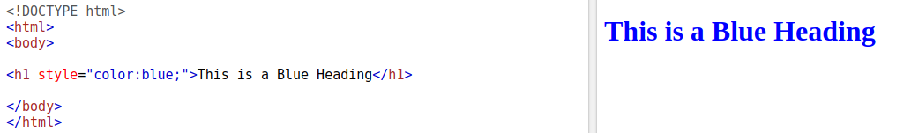
(2) Internal CSS
An internal CSS is used to define a style for a single HTML page.
An internal CSS is defined in the < head> section of an HTML page, within a Style element.
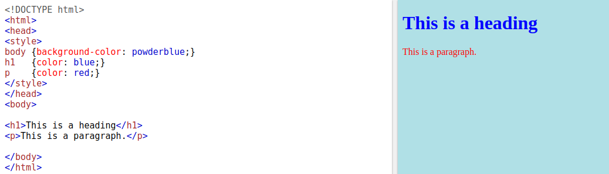
(3) External CSS
An external style sheet is used to define the style for many HTML pages.
With an external style sheet, you can change the look of an entire web site, by changing one file!
To use an external style sheet, add a link to it in the < head> section of the HTML page:
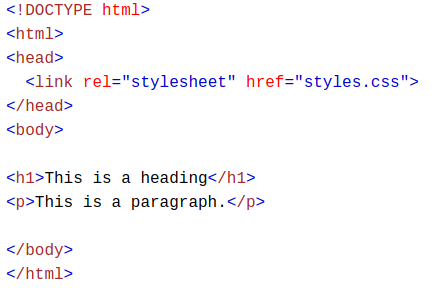 (3) CSS Fonts
The CSS color property defines the text color to be used.
The CSS font-family property defines the font to be used.
The CSS font-size property defines the text size to be used.
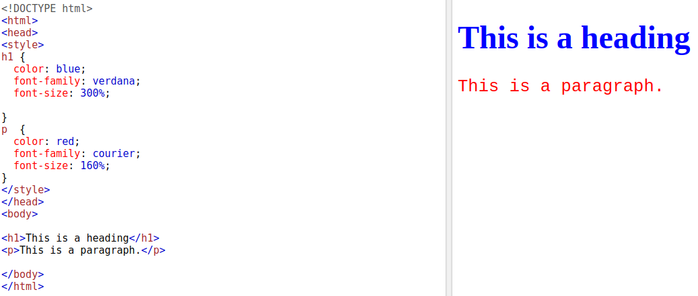
(4) CSS Fonts
The CSS color property defines the text color to be used.
The CSS font-family property defines the font to be used.
The CSS font-size property defines the text size to be used.
(5) CSS Border and Padding
The CSS border property defines a border around an HTML element.
The CSS padding property defines a padding (space) between the text and the border
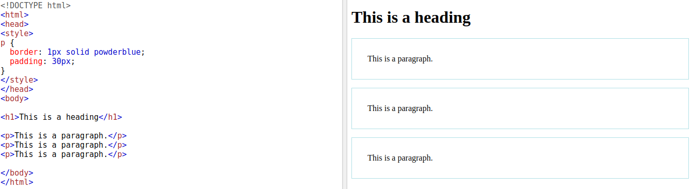
(5) CSS Margin
The CSS margin property defines a margin (space) outside the border
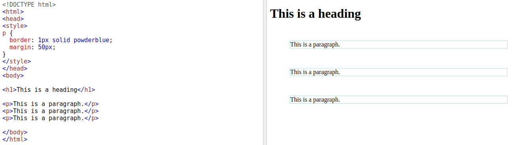
(6) The id Attribute
To define a specific style for one special element, add an id attribute to the element
The id of an element should be unique within a page, so the id selector is used to select one unique element!
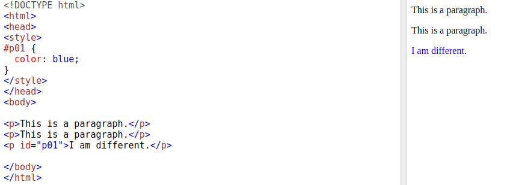
(7) The class Attribute
To define a style for special types of elements, add a class attribute to the element.
then define a style for the elements with the specific class.
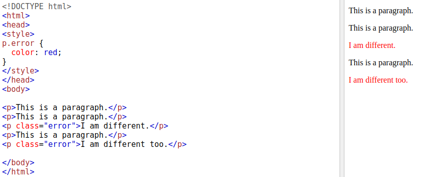
(8) HTML File Paths
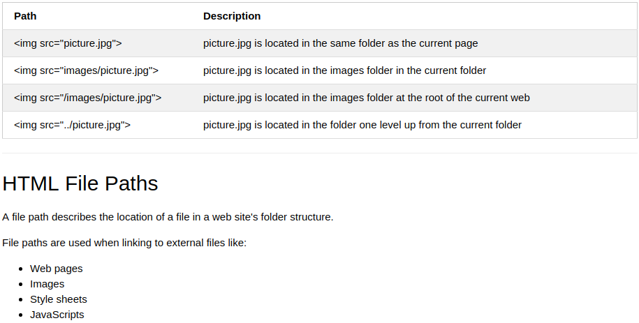
Kinds of File Paths
An absolute file path is the full URL to an internet file:
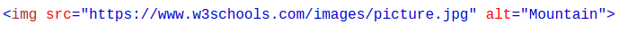
In this example, the file path points to a file in the images folder located at the root of the current web:
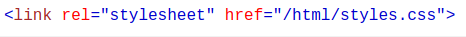
In this example, the file path points to a file in the images folder located in the current folder:
In this example, the file path points to a file in the images folder located in the folder one level above the current folder:
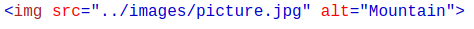
summary
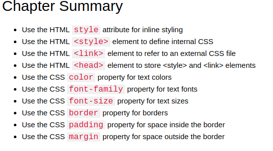